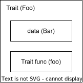
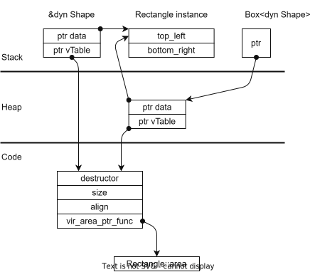
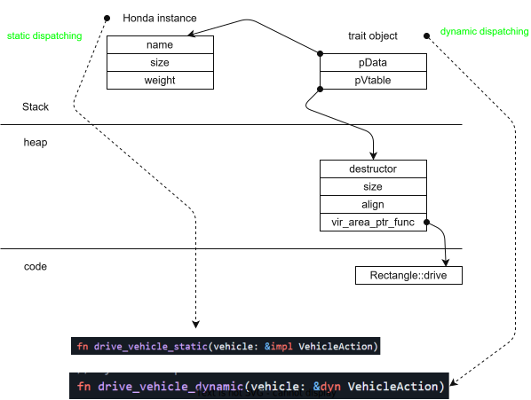

Trait bound and ways for dispatching
Trait bound
- Trait is not a type.
- Trait is a bound on type.

Dispatching is how we pass a value, which implement trait, to a function? * At runtime, do we know the data type of passed value or not? * The value is known size, or un-known size?
Normally, we might write a prototype like bellow, but it not correct in Rust.
// Compiler doesn't know which struct impl Foo will be passed in
// -> doesn't know size of params
fn my_func(foo: Foo) { // Wrong: Foo is a trait, not a type
...
}
There are 2 ways in contrast for dispatching: * Static dispatching * Dynamic dispatching
Static dispatching
Using generic data types
// pass by value
fn my_func<T : Foo> (t : T) {}
// pass by reference
fn my_func<T : Foo> (t : &T) {}
// pass by Boxed reference
fn my_func<T : Foo> (t : Box<T>) {}
- When to use:
- when have two params, and both have same Data type. Because the data type must be determined at compile time.
Using imp Trait
This way is the same as using generic data types.
// pass by value
fn my_func(t: impl Foo) {}
// pass by reference
fn my_func(t: &impl Foo) {}
// pass by boxed reference
fn my_func(t: Box<impl Foo>) {}
- When to use:
- exactly same as Using generic data types
Pros & Cons
Pros: * The data type is known at compile time. * Member function of data type will be call directly
Cons: * Rust uses monomorphization to perform Generic static dispatching. It means, in case of using generic data types, if we use my_func() for several concrete types, rust will create several version of my_func() corresponding to each data type.
struct Bar;
impl Foo for Bar {...}
struct Bazzz;
impl Foo for Bazzz {...}
let bar Bar;
let bazzz = Bazzz;
my_func(bar)
// my_func_bar(t: Bar), a version of my_func for Bar, will be used instead of my_func
my_func(bazzz)
// my_func_bazzz(t: Bazzz), a version of my_func for Bazzz, will be used instead of my_func
Dynamic dispatching
Passing by Trait object. Trait object is a refrence to instance of data type implemented the trait.
Trait object actually is a fat-pointer, which contains 2 child pointers: * Pointer to data * Pointer to vTable, which indirectly point to member function of data type.
Ref: Trait Object

fn my_func(t : &dyn Foo) // dyn ~ dynamic dispatch
fn my_func(t : &Foo) // coercing
fn my_func(t : Box<Foo>) // smart pointer
Pros & Cons
Pros: * Can bring up Polymorphism feature.
Cons: * Member function will be call in-directly (2 times de-reference)
Example
struct Honda {
name: String,
size: i32,
weight: i32,
...
}
trait VehicleAction {
fn drive()(&self);
}
impl VehicleAction for Honda {
fn drive(&self) {...};
}
// Static dispatch
fn drive_vehicle_static(vehicle: &impl VehicleAction) {
vehicle.drive();
}
// dynamic dispatch
fn drive_vehicle_dynamic(vehicle: &dyn VehicleAction) {
vehicle.drive();
}
